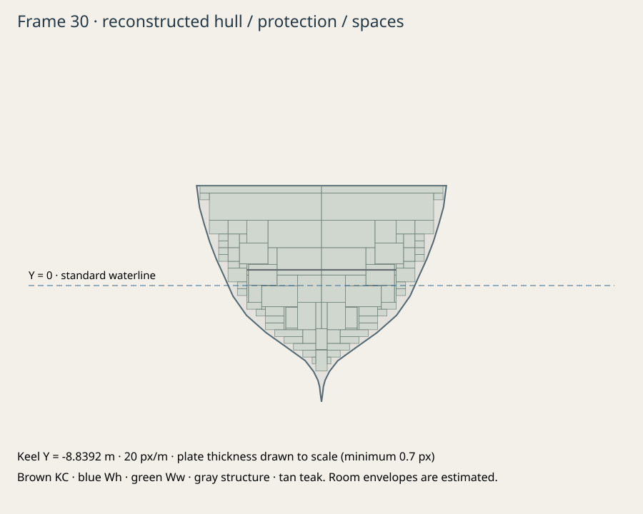
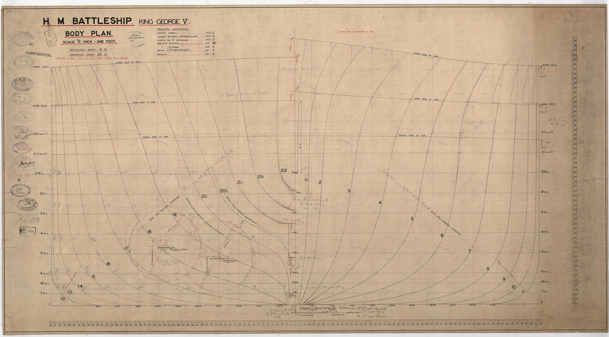
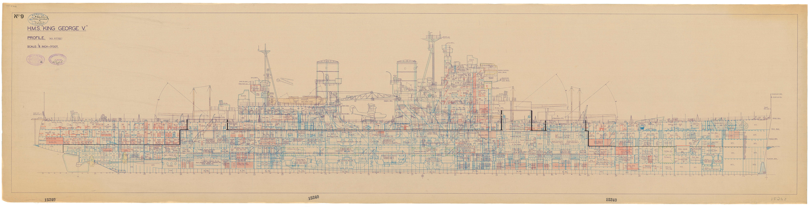

HMS King George V · early 1941
Original reconstruction refined against Vickers schematics, dated photographs and GameModels3D raster views. Inspect the actual exported ship with matched cameras, retained originals and explicit source uncertainty.
Engineering targets passed · hull sections and internal envelopes remain reconstructed. Build 4c5915250aad · EU 15.7.0.0 reference · no historical accuracy certification.
Same orthographic camera. Reference: One global 15 m per WoWS viewer unit registration, following the established viewer conversion used in the Bismarck reference workflow. Game source Y=0 retained as an unverified load datum; no component fit or nonuniform scale. Blue/brown exported overlays are available below.
Actual authored GLBGameModels3D · comparison evidence
Download full resolution comparison sheet · Reference contact sheet · Capture manifest
Dimensions and datums
| Measurement | Exported | Target | Deviation | Build tolerance | Evidence |
|---|
| length | 227.080 m | 227.080 m | +0.000 m | ±0.03 m | documented
assessed uncertainty ±0.3 m |
|---|
| beam | 31.394 m | 31.394 m | -0.000 m | ±0.03 m | documented
assessed uncertainty ±0.3 m |
|---|
| standard draft | 8.839 m | 8.839 m | +0.000 m | ±0.03 m | documented
assessed uncertainty ±0.3 m |
|---|
| waterline length | 225.600 m | 225.600 m | +0.000 m | ±0.03 m | documented
assessed uncertainty ±1 m |
|---|
| midship depth | 15.577 m | 15.577 m | +0.000 m | ±0.03 m | documented
assessed uncertainty ±0.3 m |
|---|
Measurements intersect actual exported hull triangles. The hull is watertight after welding: 18562 triangles, 0 degenerate triangles. All 152 authored room envelopes fit within the reconstructed hull. These checks cannot certify missing historical offsets.
Measurements and probes · Reviewed modeling specification · Editable blueprint · Historical raster registration
Landmark deviations
Runtime coordinates are X starboard, Y up, Z aft, in metres. Deviations check the exported landmarks against the reviewed specification; they do not measure agreement with GameModels3D. Evidence uncertainties are our assessment, not source-published error bars.
| Landmark | Exported X, Y, Z | Reviewed X, Y, Z | Largest axis deviation | Evidence and tolerance |
|---|
| main a axis | 0.00, 8.39, -50.00 | 0.00, 8.39, -50.00 | 0.0000 m | plan-measured · ±0.8 m · rmg-npb5308 |
|---|
| main b axis | 0.00, 12.09, -35.00 | 0.00, 12.09, -35.00 | 0.0000 m | plan-measured · ±0.8 m · rmg-npb5308 |
|---|
| main y axis | -0.00, 8.39, 60.00 | 0.00, 8.39, 60.00 | 0.0000 m | plan-measured · ±0.8 m · rmg-npb5308 |
|---|
| funnel cap | 0.00, 24.74, -0.80 | 0.00, 24.74, -0.80 | 0.0000 m | plan-measured · ±1.5 m · rmg-j9645-original |
|---|
| foremast top | 0.00, 37.80, -8.50 | 0.00, 37.80, -8.50 | 0.0000 m | plan-measured · ±1.5 m · rmg-j9645-original |
|---|
| mainmast top | -0.00, 34.10, 43.60 | 0.00, 34.10, 43.60 | 0.0000 m | plan-measured · ±1.5 m · rmg-j9645-original |
|---|
| fore director | 0.00, 23.09, -22.30 | 0.00, 23.09, -22.30 | 0.0000 m | plan-measured · ±1.5 m · rmg-j9645-original |
|---|
| bridge front | 0.00, 23.69, -31.00 | 0.00, 23.69, -31.00 | 0.0000 m | plan-measured · ±1.5 m · rmg-j9645-original |
|---|
Protection and internal spaces

Authored section · physical layer separation and thickness
Vickers NPB5265 body plan · 1937/38 · design waterline 28 ftCPU probes cross separate physical plates once. Teak backing is visible but contributes no invented steel-equivalent resistance. Slopes change incidence; gunhouse plates train with their mount. AP performance and flood capacities remain game approximations.
broadside: Port machinery belt · upper (349 mm steel)
plunging: Machinery armored deck (124 mm steel)
underwater: Port machinery belt · lower (137 mm steel)
All fixed views and component sheets
Evidence and unresolved differences
Body-plan sections are manual interpretations of a 1937/38 design drawing, not certified as-built offsets. Gunhouse, fitting dimensions and paint remain approximate. Game stock hull retains some later radar/light-AA details excluded from the 1941 reconstruction. CPU gunhouse armor retains a complete simplified face envelope behind the visible recessed ports.
Vickers NPB5265 body plan · 1937/38 · design waterline 28 ft
Vickers NPB5308 profile · as fitted July 1941
Original dated plan image, with credit · Full source register
Source records and access limitations
- rmg-b9 — museum research guide
retained source; interpretation and uncertainty recorded. Contains apparent secondary-armament count typo (6 vs eight twins), 80 degree secondary elevation conflicts with Mk I mount data, and a 112 ft extreme envelope inconsistent with commonly cited hull beam. These are not blindly copied.
- rmg-slr1553 — builder model museum record
retained source; interpretation and uncertainty recorded. Qualitative museum record; not a hull offset table.
- rmg-npb5306 — Vickers as-fitted drawing, stamped 12 July 1941
retained source; interpretation and uncertainty recorded. 1280 px public scan. Fairing is original interpretation, not recovered numeric offsets.
- rmg-npb5307 — Vickers as-fitted drawing, stamped 12 July 1941
retained source; interpretation and uncertainty recorded. Public low-resolution scan; appendage geometry and stations approximate.
- rmg-npb5308 — Vickers as-fitted profile, stamped 12 July 1941
retained source; interpretation and uncertainty recorded. Two online captures of the same sheet, not independent evidence; nominal linear pixel scale registered to LOA, not individual printed frames.
- rmg-npb5309 — Vickers as-fitted upper deck, stamped 12 July 1941
retained source; interpretation and uncertainty recorded. Approximate locations have about 1-2 m scan/interpretation uncertainty.
- rmg-npb5315 — Vickers shelter and boat decks, stamped 12 July 1941
retained source; interpretation and uncertainty recorded. Small fittings and hidden walls simplified.
- rmg-npb5316 — Vickers bridge decks, stamped 12 July 1941
retained source; interpretation and uncertainty recorded. Chamfered original footprints simplify the printed outlines.
- iwm-a3655 — IWM Admiralty photograph A3655, March 1941, reproduced by NavWeaps
retained source; interpretation and uncertainty recorded. Photographs are qualitative; bow photograph on same page is a separate view. Rights remain with credited archival source; reference only.
- rn-mkiii-plan — Royal Navy Mk III mounting plan of gunhouse, plate 2, reproduced by NavWeaps
retained source; interpretation and uncertainty recorded. Reproduced manual plate lacks complete volume/publication provenance on image; original closed facets use approximate dimensions. The twin is an interpreted related component.
- navweaps-mki — secondary technical compilation
retained source; interpretation and uncertainty recorded. Not treated as an original Mk I general arrangement. Muzzle velocity selected from RMG B9; SAP maps to shared AP solver.
- kgv-protection — secondary summary citing Raven/Roberts, Garzke/Dulin and Burt
retained source; interpretation and uncertainty recorded. No primary armor plan acquired. Geometry, depth registration, lower taper strata, protective deck shapes and uniform barbette thickness are explicit game approximations. Compound backing layers omitted.
- cafo-501 — transcription of 1941 Confidential Admiralty Fleet Order 501
retained source; interpretation and uncertainty recorded. Arrangement derived separately from plans.
- rmg-npa4167-excluded — 1944 plan museum listing
retained source; interpretation and uncertainty recorded. 1944 aircraft-deck removal and expanded AA deliberately excluded from the 1941 exterior.
- gm-pbsb107 — GameModels3D / World of Warships King George V pbsb107; neutral matched raster views
comparison reference; actual game version and access date recorded by ship:reference. Game fit and load datum are not historical ground truth. Reference geometry is confined to isolated raster rendering; original production geometry and materials are authored independently.
- rmg-npb5265 — Vickers 1937 body plan NPB5265, with 1938 alterations; 4800 × 2659 museum scan J9796
Primary design drawing acquired; manually read for original section reconstruction. Predates the 1941 as-fitted drawings. Half-section samples and fairing are interpreted, not recovered numerical offsets. Printed 28 ft design waterline differs from this model’s 29 ft standard-load datum. Ordinate origin remains approximately registered; 35 ft spacing is printed.
- rmg-j9645-original — Vickers NPB5308 as-fitted profile, 12 July 1941; 4800 × 1233 original public museum scan
Primary drawing registered at one uniform LOA scale and keel datum. Scanning, drawn lines and load differences retain about 1 m silhouette/height uncertainty. No independent vertical or component fitting.
- rmg-n31777 — KGV leaving Scapa Flow, 2 April 1941, museum photograph N31777
Dated exterior appearance evidence. Monochrome distant view; weathering and paint tones cannot be recovered colorimetrically.
- rn-mounting-section — Royal Navy plate 62: Mark II/III flashproofing arrangement (reproduced via Buxton / NavWeaps)
Primary drawing / photograph reproduction retained for revision 3. Vertical face, different twin/quad roof profiles, forward sill and apron. Schematic section; local dimensions are interpreted.
- rn-mounting-section-key — ADM 234/271 description for plate 62 (reproduced via Buxton / NavWeaps)
Primary drawing / photograph reproduction retained for revision 3. Context and labels for the primary mounting section, not an offset table.
- iwm-a3905 — IWM A3905: Prince of Wales forward turrets, probably trials in 1941
Primary drawing / photograph reproduction retained for revision 3. Roof plate crown and seams, broad flared rangefinder covers, sparse roof fittings. Sister ship evidence; exact KGV fit is not implied.
- twm-mkiii-1940 — Tyne & Wear Archives DS.VA/9/PH/5/2: Mk III under construction, April 1940
Primary drawing / photograph reproduction retained for revision 3. Upright gunface and rounded-bottom elevation openings. Roof incomplete during gun installation.
- iwm-doy-turret-construction — IWM: Duke of York turret under construction, reproduced on NavWeaps
Primary drawing / photograph reproduction retained for revision 3. Rounded gunhouse rear wall and armoured face form; unfinished sister-ship mounting, not dated KGV fittings.
Historical drawing © Royal Museums Greenwich / National Maritime Museum; Vickers-Armstrongs original drawings. Other archival and photograph credits remain in the source register. GameModels3D / Wargaming reference renders retained for comparison. All production geometry and materials independently authored. Reference art is not a game texture.